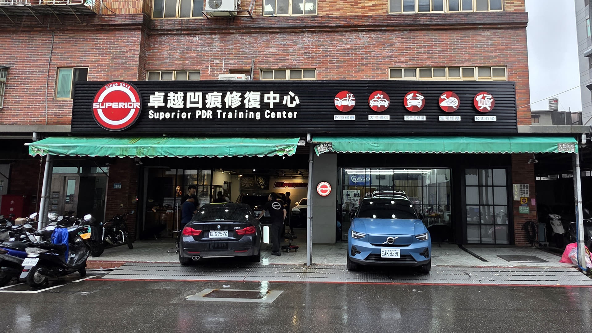
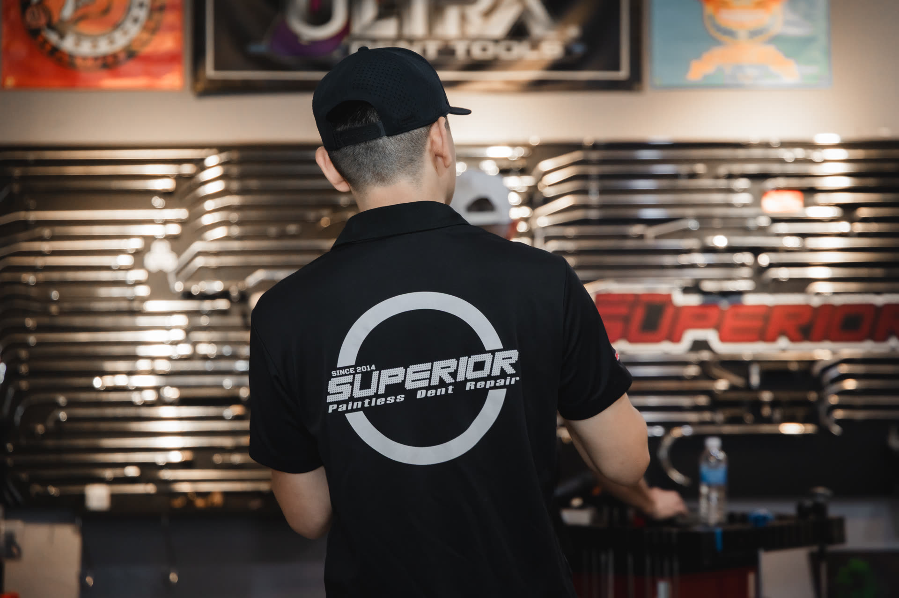
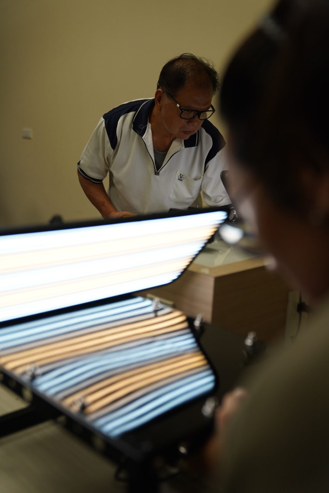
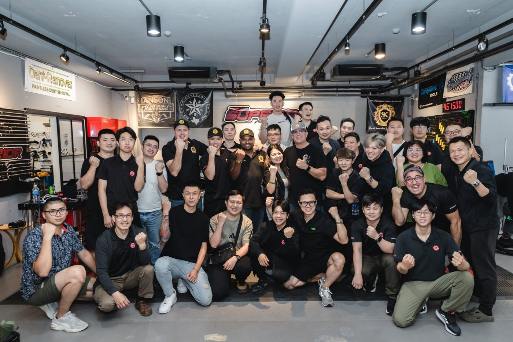
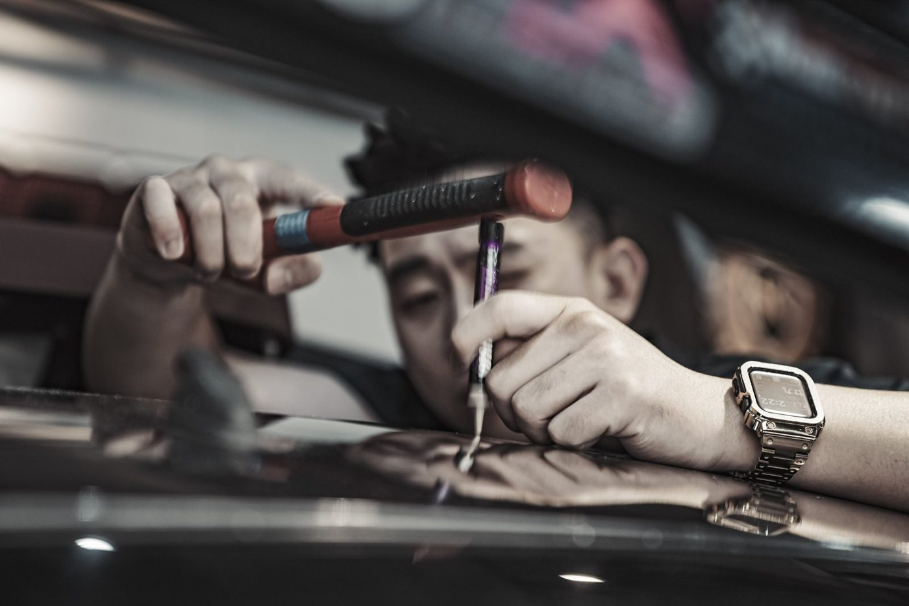
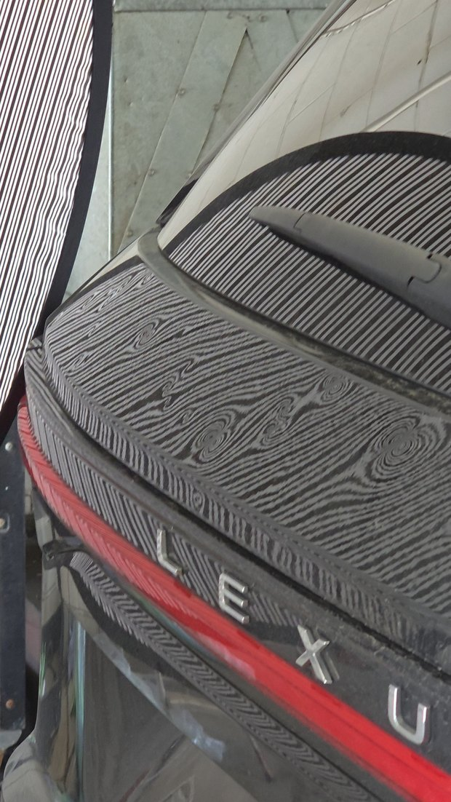
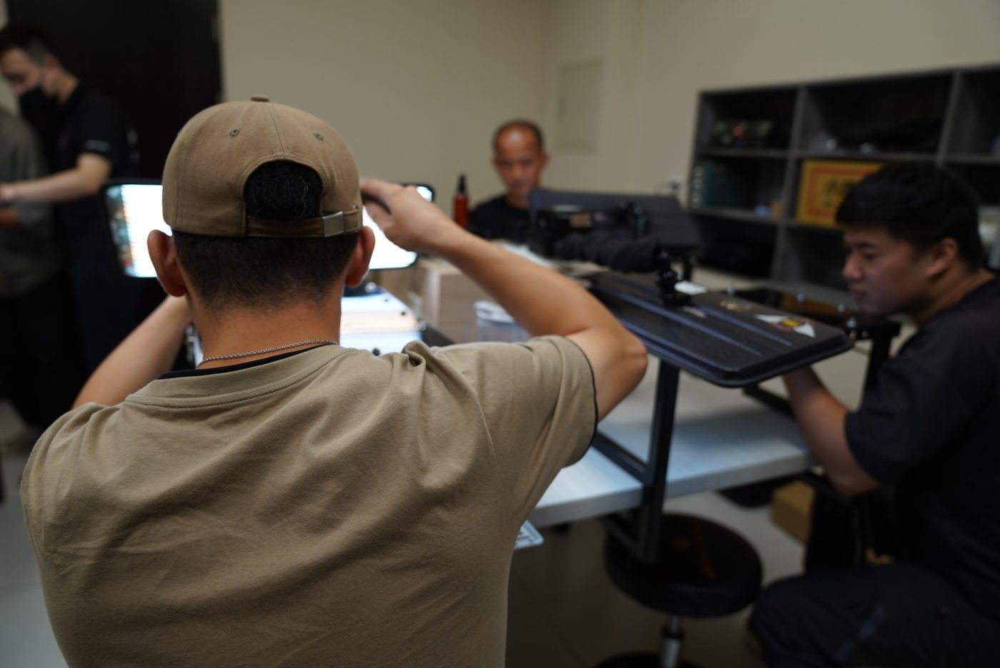
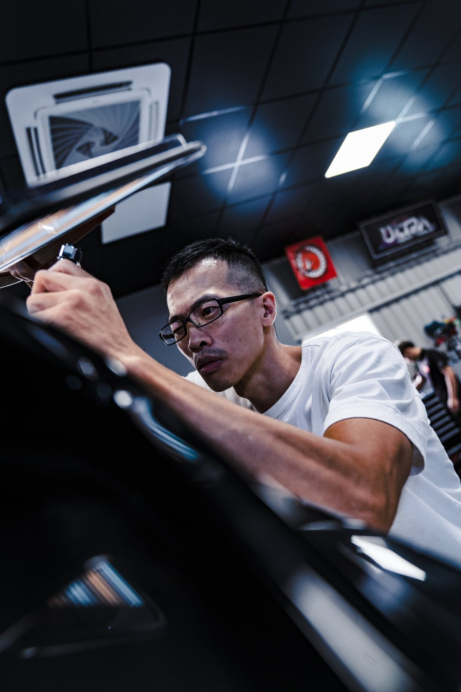
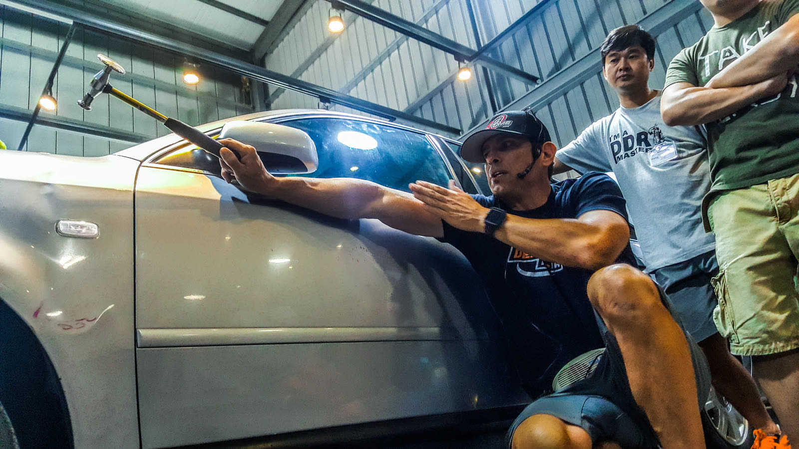

畢業了，然後呢？
卓越的下一步 · 拓展理念與全球冰雹計畫
凹痕職人初階養成班 ｜ 第十二堂 ｜ 給走完 84 小時的你
SUPERIOR PDR · 教育部
00 / 開場
先把話說在前面
技術與基礎只是門票，今天講門票之後的路
- 這 12 堂課，你們拿到的是進這個行業的門票。
- 但門票不等於位子 —— 位子要自己去坐。
- 今天我要講的是：卓越接下來要往哪走，以及這條路上哪幾個位子是留給你們的。
- 我不怕教出競爭者。市場還沒飽和，我親手教出來的人是朋友，不是敵人。
給你一張地圖，路還是要你自己走但地圖我會畫到最清楚

馬成傑 Jay Ma · 卓越 SUPERIOR PDR 創辦人00 / 開場
SUPERIOR PDR · 教育部
00 / 開場
AGENDA
今天講五件事
01
為什麼是現在四個正在發生的市場轉變 —— 用 DENT FIXO 系統裡的真實維修單
02
卓越這十二年成長、品質、流量池，數字攤開給你看
03
拓展理念為什麼卓越只跟自己教出來的人一起開店
04
全球冰雹修復計畫加拿大・Dented・2027 試做季
05
你的下一步三條路，你可以選哪一條
凹痕職人初階養成班 · 第十二堂00 / 開場
SUPERIOR PDR · 教育部
01 / 市場
01
MARKET TRENDS
為什麼是現在
以下數字不是產業報告抄來的，是卓越自己 11 年、3 萬多張維修單跑出來的真實趨勢。
重點 0101 / 市場
SUPERIOR PDR · 教育部
01 / 市場
四個正在發生的轉變
市場正在往我們這邊靠過來
TREND 01
車越來越貴
36% → 53%
進口與豪華車占比（2015→2026）。車價越高，車主越在意原廠漆與原板件。特斯拉已經是卓越營收最高的品牌。
TREND 02
願意為技術付錢
2,697 → 8,391
平均客單價（元／單），11 年成長 3.1 倍。4,000 元以下小傷從 70% 降到 34%。
TREND 03
傳統鈑金缺工
省 30–60%
相較鈑金烤漆的維修費用。老師傅退休、新人不進來 —— PDR 是取代傳統鈑金的方向，不是附屬品。
TREND 04
還在教育期
約 4 成
估計還有四成車主不知道 PDR。全台 700 萬輛自用車，專業 PDR 店家仍然稀少 —— 還在卡位期。
數據來源：DENT FIXO 維修管理系統（板橋・士林・中和・台中，2015/04–2026/08）01 / 市場
SUPERIOR PDR · 教育部
02 / 數據
02
GROWTH DATA
卓越這十二年
大部分品牌只會說「生意很好」。我們直接給你曲線 —— 營收用成長倍數呈現，其他全部是實際數字。
重點 0202 / 數據
SUPERIOR PDR · 教育部
02 / 數據
成長曲線 · 以 2014 年為基準（＝1）
12 年，年營收成長 26 倍
10
20
30
40
×1
×26
×46
20141516171819202122232420252026 推估
年營收倍數 · 最後一根為 2026 年依前五個月推估（斜線）
這裡只給倍數，不放金額 —— 我要你看的是趨勢與速度，
不是拿一個數字來說嘴。
2021 那一根是掉下來的 ——
做生意不會每年都往上，但方向要對。
營收以倍數呈現，不揭露金額02 / 數據
SUPERIOR PDR · 教育部
02 / 數據
今年還在加速
十個月，就超過去年一整年
全台修復台數
2025 全年
4,272 台
2026 1–10月
5,006 台
十個月就超越 2025 全年 · 月均 500 台以上
到店評估次數
2020 全年
7,584 次
2026 1–10月
13,673 次
成長 +80%
全台門市數
2014
1 間
2026
8 間
十二年開到 8 間 · 店長全部是自己教出來的人
1,099
單月 LINE 線上估價派單
2026 年 8 月
2026 年 8 月
× 3.9
官網每日訪客年增倍數
2026/10 平均每天 782 位
2026/10 平均每天 782 位
全台 8 間門市 —— 板橋、士林、台中、中和、竹北、高雄、台北濱江、桃園。

統計至 2026 年 10 月02 / 數據
SUPERIOR PDR · 教育部
02 / 數據
品質實證
客人不是因為便宜選我們
30 天內返修率
2015
2.9%
2026
1.1%
交車後 30 天內回來重修的比例
修不成率
2015
5.8%
2026
0.5%
從每 17 台 1 台，降到每 200 台 1 台
量變大、單價變高，這兩條線反而一路往下 —— 這才是真的做得起來。
客人選擇卓越的原因
累計填答次數
技術品質
4,779
價格
54
因為價格選卓越的，只有 54 次 —— 你不需要靠削價搶客
技術不會說謊但你要有本事把最後那 20% 做出來
數據來源：DENT FIXO 維修管理系統 2015–202602 / 數據
SUPERIOR PDR · 教育部
02 / 數據
流量池
開店第一天，就接上 40 萬人的流量池
Facebook
127,766
Instagram
94,365
TikTok
67,900
LINE 官方帳號
61,337
YouTube
55,563
五大平台追蹤數 · 2026 年 10–11 月各平台後台
合計
406,931 人
- 一個人開店最難的是「客人從哪裡來」—— 這是卓越花十二年養出來的。
- IG 28 天觸及 42.8 萬個帳號、YouTube 累計 2,232 萬次觀看、TikTok 50 萬＋按讚。
- LINE 好友 2026 Q3 單季新增 4,397，創新高。
- 總部的每一支影片、每一篇文章都在幫門市導客。
- 詢問進來後，由 ECHO AI 依地區自動派單到最近的門市。
社群數據：2026 年 10–11 月各平台後台02 / 數據
SUPERIOR PDR · 教育部
03 / 理念
03
WHY SUPERIOR
拓展理念
為什麼卓越只跟自己教出來的人一起開店。
重點 0303 / 理念
SUPERIOR PDR · 教育部
03 / 理念
一個原則
只跟自己教出來的人一起開店
- 所有加盟主都必須完成卓越培訓、通過結業評比、取得認證。
- 這不是為了收學費 —— 是確保每一間掛卓越招牌的店，品質都一樣。
- 我們寧可篩選有共識、有熱忱的人，也不靠收加盟金衝店數。
- 品質是紅線 —— 一間店做壞，傷的是所有門市。
所以今天坐在這裡的你們，已經站在這條路的起點上了。
零基礎
想創業的新手
體驗課 → 職人養成班 → 認證 → 儲備加盟實習 → 開店
有底子
現職鈑金・汽車美容
技術評估 → 職人班或進階班 → 認證 → 開店
自己人
卓越結業學員與員工
加盟評估 → 選址 → 開店陪跑
優先取得加盟資格與開店區域
優先取得加盟資格與開店區域
不論從哪裡出發，拿到的品牌、系統與支援都一樣03 / 理念
SUPERIOR PDR · 教育部
03 / 理念
為什麼要一起做
自己開店 vs 加盟卓越
| 項目 | 單打獨鬥 | 加盟卓越 |
|---|---|---|
| 客源 | 自己買廣告、等口碑慢慢累積 | 40 萬＋流量池，LINE 估價自動派單到你的門市 |
| 估價 | 憑感覺報價，怕報高跑單、報低虧錢 | 3 萬多筆維修單累積的估價邏輯與定價標準 |
| 客服 | 一邊修車一邊回訊息，晚回就跑單 | ECHO AI 24 小時接待、判讀、預約，真人可隨時接手 |
| 技術 | 遇到難傷只能自己摸索 | 總部技術支援、進階課程、國際研討會資源 |
| 品牌信任 | 客人不認識你，第一次很難成交 | 12 年品牌、國際賽事與認證、3.4 萬台修復實績 |
| 工具 | 零散採購、價格高、踩雷成本大 | 卓越工具部統一規劃開店工具與耗材 |
| 管理 | 報表、請款、人事全部自己來 | CRM、DENT FIXO 維修管理系統、行政管理中心一套到位 |
技術與基礎只是門票 —— 讓一間店活下去的是客源、定價、管理與品牌信任03 / 理念
SUPERIOR PDR · 教育部
03 / 理念
HQ SUPPORT
總部給你的九大支援
品牌授權與店面形象招牌與店面 CI、官網門市頁與 Google 商家建置，享區域經營保障
ECHO AI 客服與派單LINE／FB／IG 全接進 ECHO，依地區自動派單，店長 Telegram 即時通知
CRM 與 DENT FIXODENT FIXO 維修管理系統：詢問到結案全程追蹤，維修單 QR 綁 LINE，交車自動送修復前後照片
估價系統與定價標準依傷況、深度、板件、材質給建議價格區間，新店也報得準
技術培訓與認證職人班、進階班、一對一；CAC 編號證書可線上查證
工具與耗材供應工具部協助規劃開店工具清單，代理品牌與團購資源
行銷與內容總部製作影片與文章，加盟店作品也能上品牌頻道曝光
保險理賠通路與產險公司、保代洽談理賠合作，案件依地區分流到合作門市
行政與營運管理線上申請簽核、出差里程系統、營運 SOP 與店長月度數據回饋
除了理賠通路仍在洽談擴大，其餘都是 8 間門市每天正在用的03 / 理念
SUPERIOR PDR · 教育部
03 / 理念
SYSTEM IN ACTION
這三套系統，每天在 8 間門市跑
ECHO
線上接客
LINE 官方帳號 24 小時自動回覆，問貴姓、車款、照片、分店，照片先用 AI 判斷修不修得了，再依地區自動派給最近的門市，店長 Telegram 即時收到。
MOC
店長操作中心
店長在面板直接接手回話，真人一接手 ECHO 自動靜音 10 分鐘。一鍵開報價、轉分店，每一通的首次回覆時間都被記錄，月底變成 KPI。
DENT FIXO
門市管理系統
車到店，客戶與車輛資料從 ECHO 直接帶過來開維修單。修復前後照片、進度、金額掛在同一張單底下，完工自動通知取車並送出前後對比。
下一頁用 74 秒把這條線從客人傳第一句話，一路跑到交車後的五星評價 ——
加盟卓越，這整套開店第一天就能用。
ECHO 導入後：同一批人力，每月接住的客人從 1,113 成長到 1,539（+38%）03 / 理念
翻到這頁自動播放 · 按影片可暫停
SUPERIOR PDR · 教育部
04 / 冰雹
04
GLOBAL HAIL
全球冰雹修復計畫
台灣市場總有一天會飽和。我們要先幫技師找到第二個舞台。
重點 0404 / 冰雹
SUPERIOR PDR · 教育部
04 / 冰雹
為什麼要往外走
台灣總有一天會飽和，出口要先準備好
- PDR 是少數可以「一個人、一套工具」就出國工作的技術。
- 語言不是最大門檻 —— 板件上的結果才是條件。
- 卓越要做的是帶隊走出國門，替大家爭取與創造市場，不是讓大家各自摸索。
- 技術是護照，能修到什麼程度，決定你能站在哪個市場。
加拿大冰雹季約 6 月到 9 月中 —— 剛好跟台灣的淡旺季錯開。




隻身前往也能在海外拿到高收入 —— 但一起去，走得更穩04 / 冰雹
SUPERIOR PDR · 教育部
04 / 冰雹
加拿大亞伯達省 · 冰雹走廊 Hailstorm Alley
那裡每年都在下冰雹
10
20
30
12 億
32.9 億
1.64 億
2.3 億
2020/06
卡加利2024/08
卡加利2025/07
卡加利2026/05
愛德蒙頓
卡加利2024/08
卡加利2025/07
卡加利2026/05
愛德蒙頓
單場冰雹保險理賠（加幣） · 資料來源：加拿大保險局 IBC
13 萬＋
2024/08 那場的
保險索賠件數
保險索賠件數
20 年
亞伯達省連續 20 年
每年至少一場重大冰雹
每年至少一場重大冰雹
- 加拿大史上損失最大的 10 場災害，有 5 場在亞伯達省，全部發生在 2016 年之後。
- 大災之後，當地技師人力嚴重不足 —— 這就是缺口。
這是有大小年的生意。看左邊：2024 和 2025 差了 20 倍。
所以第一階段刻意壓低投入、先試做一季，不先成立公司。
資料來源：加拿大保險局（IBC）· 卓越加拿大冰雹專案評估報告04 / 冰雹
SUPERIOR PDR · 教育部
04 / 冰雹
冰雹市場
你考的那顆深酒窩，就是冰雹


- 冰雹修復要處理的，就是深的酒窩 —— 大小與深度，跟你這次考試的題目一樣。
- 所以考試不是為了發獎狀，是先幫你對準未來的市場。
- 冰雹季一來就是整批車、整片板 —— 量大、集中、講求速度與穩定度。
- 能不能吃到這塊，看的是你手上的穩定度，不是運氣。
考試題目＝市場需求
車門 × 1 ＋ ABC 柱 × 1 —— 深度與大小，對準的就是冰雹
冰雹要能修深酒窩 —— 這就是為什麼考題是這樣出的04 / 冰雹
SUPERIOR PDR · 教育部
04 / 冰雹
2026 年 9 月 · 加拿大卡加利
這不是願景，是已經談成的事
我 2026 年 9 月去了一趟加拿大， 正式跟當地冰雹修復公司 Dented 取得共識 —— 台灣的技師，可以合法到加拿大做冰雹季。
- Dented 是誰：2005 年成立，加拿大最早投入冰雹修復的公司之一， 4 個自有廠（卡加利、Red Deer、愛德蒙頓、Saskatoon）。
- 他們有通路：保險公司轉介、Body shop 連鎖（CSN、Assured）、多家原廠車商。
- 他們缺人手：冰雹季一來，當地熟練技師永遠不夠。
- 我們有人，也有教室 —— 而且雙方理念一致：不烤漆、不補土、保留原漆原板件。
- 雙向的：Dented 也會派技師和學生來卓越受訓。
第一條共識就是合法。
沒有工作許可不能在加拿大修車 —— 就算薪水由台灣付也一樣。 被查到會遣返並留下紀錄，影響以後入境。寧可不做，也不違規。
沒有工作許可不能在加拿大修車 —— 就算薪水由台灣付也一樣。 被查到會遣返並留下紀錄，影響以後入境。寧可不做，也不違規。

合作對象：Dented（加拿大亞伯達省，2005 年成立）04 / 冰雹
SUPERIOR PDR · 教育部
04 / 冰雹
怎麼走
先試做一季，再談後面
2027 Q1
送件與集訓
1–3 月確定當季技師、送工作許可申請 —— 冰雹不會等簽證。出發前做冰雹專門集訓。
2027 夏
第一階段：試做季
1 到 3 名卓越技師＋1 位會說英文的隊長，冰雹季（約 6–9 月）赴加停留 1 到 4 個月。
季末
一起檢討
看每人每天修復台數、重修率、客戶與合作夥伴回饋，雙方一起決定要不要進下一階段。
2028 起
擴大
若試做季數字站得住，再擴大到 5、6 人，並討論更進一步的合作架構。
第一階段由 Dented 當雇主，卓越負責技師招募、行前訓練、隊長帶隊與品質把關。
我們會維持一份「簽證已辦好的待命名單」 —— 冰雹一下，幾天內就能出發。
第一階段刻意壓低投入，把固定成本降到最小04 / 冰雹
SUPERIOR PDR · 教育部
04 / 冰雹
加拿大冰雹市場 · Jay 在現場問到的實際行情
剛上完課的人，一天就有 1,000 加幣
基礎水準（技術還不純熟）
1,000 加幣
／天 · 修基本凹痕就能達到
一個月以 24 天計
約 24,000
加幣 / 月 · 約新台幣 55 萬
熟練技師（手要快）
5,000–6,000
加幣 / 天 · 差距就在速度
- 冰雹修復是論件計酬 —— 修得越快、修得越多，收入直接往上跳。
- 1,000 跟 6,000 中間差的不是運氣，是手速跟穩定度 —— 而手速是練出來的。
- 這就是為什麼要辦出發前的冰雹集訓：同樣的人，快與慢可以差好幾倍。
※ 以上是技師端的產值，不是入袋淨收 —— 還要扣機票、住宿、保險與當地成本。台幣以 1 加幣 ≈ 23 元估算。
數字來源：Jay 2026/09 在加拿大現場向當地業者取得04 / 冰雹
SUPERIOR PDR · 教育部
05 / 下一步
05
YOUR NEXT STEP
你的下一步
三條路，你可以選哪一條 —— 也可以一條一條走。
重點 0505 / 下一步
SUPERIOR PDR · 教育部
05 / 下一步
三條路
從今天起，你可以往這三個方向走
ROUTE 01
繼續把技術練深
進階班、一對一課程、國際研討會。先把手練穩，後面每一條路才打得開。
初階結業 → 進階班 → 國際認證
ROUTE 02
進門市，走到開店
儲備加盟實習：進卓越門市實戰接待、估價、修復、交車，熟悉 ECHO 與門市 SOP。
儲備實習 → 區域評估 → 簽約 → 開店陪跑
零基礎約 6–12 個月
零基礎約 6–12 個月
ROUTE 03
跟隊伍出國
加拿大冰雹季。技術夠穩、簽證辦得下來，就有機會被排進待命名單。
冰雹集訓 → 工作許可 → 跟隊出發
2027 年第一季名額很少
2027 年第一季名額很少
三條路不互斥 —— 練技術是所有路的共同起點05 / 下一步
SUPERIOR PDR · 教育部
05 / 下一步
INCOME REFERENCE
技術走到哪，收入就到哪
LEVEL 01 技術員
5–8 萬 / 月
完成職人班、能獨立處理一般小凹痕，在門市累積實車經驗
LEVEL 02 資深技師
10–18 萬 / 月
能處理大面積、稜線、鋁合金等高單價案件，取得國際認證
※ 以上為卓越體系內技師的參考區間，實際收入依個人技術、所在區域、營業時間與經營狀況而異，
不構成任何收入保證。
PDR 是看手藝吃飯的行業沒有人能幫你修那最後 20%

收入區間取自卓越體系內實際狀況05 / 下一步

下一間卓越，也許就在你的城市
我不怕教出競爭者 —— 體系夠大，市場才會穩
想走哪一條路，今天課後直接跟我說 ｜ 馬成傑 Jay Ma